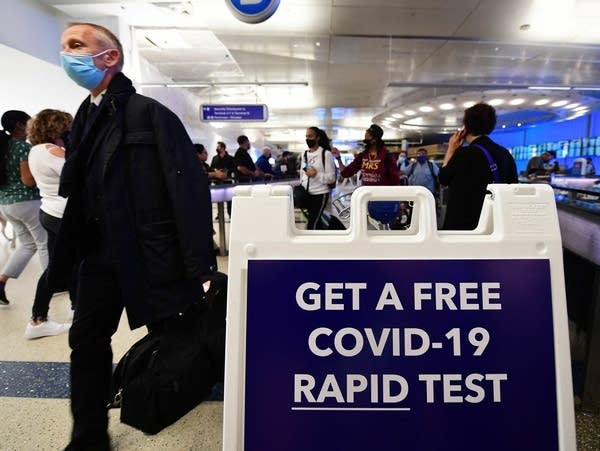
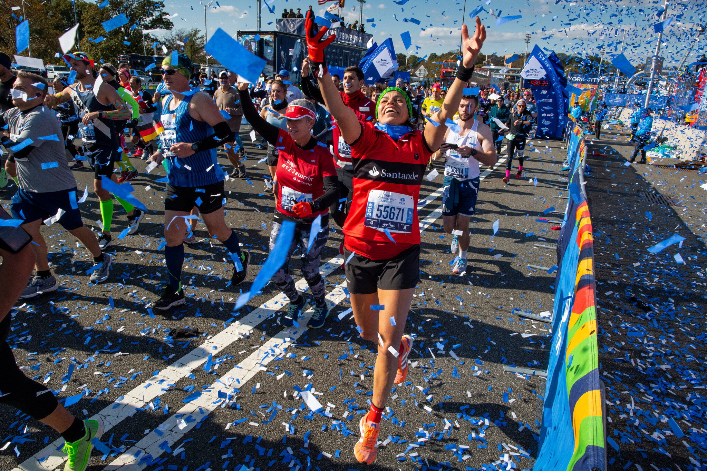

Here's the latest updates from your Neighborhood!
News
At-Home Covid Testing Ramping Up

26 Minutes Ago
The state of Minnesota says it is “sunsetting” its longstanding
mail-order COVID-19 lab test program through Vault Health this week, and
will start offering at-home rapid tests through the mail starting
Tuesday.
“Even as case numbers decline, it’s important that
Minnesotans test for COVID-19 if they are feeling sick,” Gov. Tim Walz
said in a statement about the program. “That’s why we’re continuing to
work to make tests easily accessible — now and in the future.” He said
the state has secured 500,000 rapid antigen test kits, with two tests in
each kit.
Starting Tuesday, Minnesotans can order two kits, for a
total of four tests per household, through an online ordering system at
mn.gov/covid19. The program will send them out until they are gone.
The state is offering the antigen tests as it says demand for the
free Vault PCR tests, which had to be mailed back to a lab, has dropped
from more than 16,600 a week in January, to about 1,400 last week. The
state said the antigen tests “provide more flexibility to Minnesota
families who need to monitor COVID-19 symptoms.
The tests can be done at
home and results are delivered within minutes, with no lab delivery
required.”
People who still have Vault PCR tests can use them up
until their expiration date, or through the end of 2022, whichever is
first.
Hit and Run in St. Paul
1 Hour Ago
Police in St. Paul say a 59-year-old man suffered life-threatening
injuries in a hit-and-run incident Thursday evening. Police were
dispatched at around 10:30 p.m. to the intersection of Sixth Street and
Cedar Avenue on the report of a hit-and-run incident. When they arrived,
they found the victim unresponsive and with “significant injuries.”
The victim was taken to Regions Hospital where he is listed in critical
condition with life-threatening injuries. Police reviewed surveillance
footage and observed a silver BMW strike the man and leave the scene. A
witness told police that the man was crossing the street when he was
struck.
According to police, a 37-year-old man arrived at the scene shortly
after the incident and said his mechanic was driving the vehicle. He
said the mechanic told him he hit someone and fled the scene. “The man
gave officers information about the suspect and said he wasn’t in the
car at the time of the accident,” police said.
Police located the BMW and impounded it.
The investigation is
active. No arrests have yet been made.
First In-Person Boston Marathon Held Since Covid

4 Hours Ago
Runners were gearing up for the Boston Marathon on Monday, marking the
return of the prestigious race to its springtime spot for the first time
since the pandemic began.
At 6 a.m. in Hopkinton, Race Director Dave McGillivray sent out a group
of about 20 from the Massachusetts National Guard, which walks the
course annually, announcing the start of the 126th Boston Marathon. He
told them that the "comeback is greater than the setback." McGillivray
said in an interview that "it's a new normal," with some pandemic
protocols still in place — like requiring participants to be vaccinated
or show an exemption — "but it's a normal." He said he's using the
catchphrase because "we're about to see that come to life." "We
recognize that we're not totally out of the woods. We're still sensitive
to the virus and requiring vaccinations," he said. "We're really not
back to normal for the time being, but this is what the new normal is.
The key is keeping everyone safe."
The wheelchair divisions were to start shortly after 9 a.m., followed by
the elite fields. Eleven former champions are competing. McGillivray
said it's "one of the greatest assembled pro fields of all time." It has
been only six months since athletes raced 26.2 miles (42.2 kilometers)
to Copley Square in Boston for the world's oldest and most prestigious
annual marathon. The 2020 race was called off because of the pandemic,
the first cancellation since the event began in 1897. And the 2021
version was postponed, then held in October. That was the first fall
edition of the marathon.
The field was smaller for social distancing and
the crowds were smaller too, though no less enthusiastic. More than
28,000 runners were signed up to run Monday on the Patriots' Day
holiday. It's the marathon's traditional spot on the calendar, on the
day that commemorates the start of the Revolutionary War. About
one-third of the National Guard group marched in October, too. Capt. Gus
Ashton, 29, said the crowds last year were great and he's excited to get
back out again and see even more people on the course.
 News
News Weather
Weather Events
Events